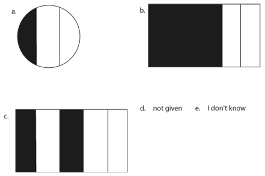

|
|||||
|
Selected Results From The Rational Number Project*
|
|||||
|
|||||
|
This paper is intended to serve as an updated compendium of Rational Number Project activities. Several major project strands are described. Each description is followed by several references to published materials dealing with that particular strand. The descriptions provided are of necessity very brief. Interested persons should consult the appropriate references for more detailed information. The Rational Number Project (RNP) was a four-year (1979- 83) U.S.-based research project funded by the National Science Foundation (NSF). The project involved three Universities (Northern Illinois, Minnesota and Northwestern) and utilized well-defined theory-based instructional and evaluation components as well as an overall plan for validating project generated hypotheses. The project's intent was to describe rational number development from its beginnings to its formal operational level in well-defined instructional settings. The major goal is the identification of psychological and mathematical variables which impede and/or promote the learning of rational number concepts. The project has
recently been refunded by the NSF (1984-86) and is at present focusing
on the role of rational number concepts in the development of proportional
reasoning skills.
|
|||||
|
CONTEXTUAL CONCERNS The task of assessing children's ability to utilize rational number knowledge in applicational situations is difficult. Children often are unable to transfer ideas to contexts they have not encountered before. Rational Number Project, addressed the issue by providing a rich foundation of rational number concepts utilizing a broad range of perceptual variables in a manner consistent with the ideas of Dienes. Concurrent with instruction, interviews which stressed children's functional rational number knowledge were conducted. An evaluation of these interviews suggests the following: Only subjects exhibiting consistent success in a variety of applied situations can be assumed to have developed a generalized understanding of rational number. Children who do not have a workable concept of rational number size cannot be expected to exhibit satisfactory performance across a set of tasks which varies the context in which the number concept of fraction is involved. In one study, 5th grade children were required to select digits from a provided list to form two fractions whose sum was as close to 1 as possible. In a second study, the same children were to suggest target rational numbers on a number line. These were to be hit by an electronic "dart" flying across a video screen. In a third study, these children were to interpret a given set of fraction symbols as ratios for black-ink/water mixtures and to associate them with a scale of increasingly darker gray levels. Findings suggest that a coordinated use of order and equivalence knowledge, combined with skill in estimating the size of rational numbers, enabled some children to be successful across all three tasks. An ability to perceive the ordered pair in a fraction symbol as a conceptual unit (rather than 2 individual numbers) was also found to be an indicator for successful performance. References: Behr, M.J., Wachsmuth, I., & Post, T.R. (1985). Construct a sum: A measure of children's understanding of fraction size. Journal for Research in Mathematics Education (2), 120-131. Wachsmuth, I., Behr, M.J., Post, T.R. (1983, April). Children's quantitative Notion of Rational Number. Paper presented at the meeting of the American Educational Research Association, Montreal. ERIC document No. ED 229 218. PERCEPTUAL DISTRACTORS In the work of the Rational Number Project, it has been observed that certain components of a manipulative aid or pictorial display that are essential to illustrate one basic concept frequently impair the child's ability to use the aid for another concept. In particular, various types of perceptual cues can negatively influence children's thinking. In some cases, these perceptual cues act as distractors and overwhelm children's logical thought processes. In the instructional component of the Rational Number Project, we found that children tend to assume that physical conditions within which problems are presented are relevant to and consistent with the task. This tendency is probably an artifact of their learning from a textbook or worksheet-dominated instructional program that places little emphasis on manipulative materials. Within such a program, problem conditions are necessarily static in nature, providing little opportunity for children to manipulate problem conditions. Students expect that mathematical problems conditions (context) conform to the intended task and, therefore, are not in need of restructuring or rethinking. Children learn that one simply takes what is given, and proceeds directly to the solution. Perceptual distractors represent one class of instructional conditions that make some types of problems more difficult for children to solve. Knowledge of their impact will be helpful in the design of more effective instructional sequences for children. It seems reasonable to suggest that initial examples might be given wherein the potential impact of perceptual distractors is minimized, but that later examples should deliberately provoke children to resolve conflicts that arise in association with perceptual distractors. Although performance with rational numbers is affected by the presence of distractors, children can be taught to overcome their influence. Furthermore, the strategies generated by children to overcome these distractors lead to more stable rational number concepts. BIBLIOGRAPHY Behr, M.J. and Post, T.R. (1981). "The Effect of Visual Perceptual Distractors on Children's Logical-- Mathematical Thinking in Rational Number Situations". In T.R. Post (ed.) Proceedings of the North American Section, International Group for the Psychology of Mathematics Education. Minneapolis, MN: September. Behr, M.J., Lesh, R., Post, T.R., and Silver, E.A. (1983). "Rational Number Concepts". In R. Lesh and M. Landau (eds.) Acquisition of Mathematics Concepts and Processes (pages 92-126). New York: Academic Press. ORDER AND EQUIVALENCE Understanding the order and equivalence of fractions required an understanding of the compensatory relation between the size and number of equal parts in a partitioned unit. A small percentage of children are able to exhibit an understanding of this relation after only brief instruction. Other children grasp it after additional lessons. For still others, the relation remains elusive even after they have had ample opportunities to learn and practice. Instruction aimed at developing an understanding of the compensatory relation will require more instructional time than had been given in most curricula, in addition to a careful spiraling of the concept through several grade levels. We recommend that fractions be introduced in the third grade. The introduction should be limited to establishing elementary meanings for fractions, with a heavy emphasis on unit fractions. As the compensatory relation is being learned, its application to the problem of ordering unit fractions can begin. Such experience would provide a good foundation for establishing a quantitative concept of rational number. At the end of the third grade or at the beginning of the, fourth, instruction would incorporate the concept of nonunit fractions, which would be developed through the iteration of limit fractions. The concept of order would be extended to fractions with the same numerators and then to fractions with different numerators and denominators. Our observations suggest that children whose rational number concepts are insecure tend to have a continuing interference from their knowledge of whole numbers. This interference needs careful consideration by researchers, curriculum developers, and teachers. It would clearly be inadequate simply to inform children when the schemata they have developed for dealing with whole numbers are appropriate and when they are not; children need to learn how to make such determinations on their own. BIBLIOGRAPHY Behr, M.J., Wachsmuth, I., Post, T.R., and Lesh, R. "Order and Equivalence of Rational Numbers: A Teaching Experiment". Journal for Research in Mathematics Education (5), 323-341. Behr, M.J., Wachsmuth, I., and Post, T.R. (1985). "Construct a Sum: A Measure of Children's Understanding of Fraction Size". Journal for Research in Mathematics Education, (2). 120-131. Post. T.R., Wachsmuth, I., Lesh, R., and Behr-, M.J. (1985). "Order and Equivalence of Rational Numbers: A Cognitive Analysis". Journal for Research in Mathematics Education, 16(1), 18-36. STRATEGIES Many children develop or invent strategies for dealing with fraction order and equivalence tasks which likely have origins in whole number arithmetic or even more elementary experiences. It was observed that the idea of strategy is fairly fluid among many children. It appears, however, that children's strategies are frequently local strategies. That is, the strategy employed is often a function of the specific task, and does not necessarily persist through or transfer to different situations. This was found between children and within particular individuals. Variation in the numerica1 characteristics of a problem frequently will generate different solution strategies even within a single individual. It was illustrated above that the same child within a short period of time might employ two vastly different algorithms for similar questions, one algorithm referring to the physical aspect of a number of pieces, the other being based upon number relationships and thus dealing at a higher level of abstraction. This supports a hypothesis of interaction between solution strategies and the numerical characteristics of the task situation. It is interesting to note that children employ strategies which have not been taught directly. The residual and transitive strategies are examples of this. Residual: 5/6 < 7/8 because they both have one piece left over (to make a whole) and since 1/6 is greater than 1/8, 5/6 (1-1/6) must be less. Transitive: 4/9 < 5/8 because 4/9 < 1/2 and 5/8 > 1/2). Such strategies seem to be natural extensions of those previously used. It was also observed that a self-generated strategy was less likely in tasks with fractions less than 1. It may be hypothesized that this is because a proper fraction such as 3/5 can be dealt with more easily by imagining its "bigness" as part of a physical unit, than would be the case for 12/5. Children often invent strategies (many of which are incorrect) when they are asked to compare two (not equivalent) fractions which neither have like numerators nor like denominators. For example, 3/5 and 5/8 are difficult to order by any means other than an abstract approach such as converting to a decimal, Losing a common denominator, or using a cross multiplication. BIBLIOGRAPHY Post, T.R. and Behr, M.J. (1985) "Research-based Observations about Children's Learning of Rational Number Concepts" Focus on Learning Problems in Mathematics, Farmington Mass. (in press).
If instruction did emphasize both of these fraction problem types in the elementary school, children might acquire a better concept of fraction than is currently the case. These two fraction problem types exemplify Piaget's concept of reversibility; the operations of finding a fractional part of a unit and of finding the unit of which a given fraction is part are inverse operations. Ability to do one of the operations but not the other suggests an incomplete understanding of the concept of fraction. We gave problems of the type "If x is m/n of y, find y" in various forms: (a) x was either a
continuous region or a discrete set, The data from grade 5 children indicate use of 4 different strategies for solution. Two strategies which usually lead to a correct solution were similar; the child first partitioned the given fractional part into n equi-sized pieces and the referred to each piece as (a) one n-th or (b) one part. After this the child found the whole by iterating this piece while counting and saying, (a) 1/n-th, 2n-ths, . . ., n/n-ths or (b) 1 part, 2 parts, . . . , n parts. Most unsuccessful solution attempts involved one of two strategies: (a) The child treated the given fractional part as the unit fraction 1/n and iterated this n times or (b) The child treated the fractional part as the unit and showed m/n-th of it. REFERENCE Behr, M., Post, T., Lesh, R., and Waschsmuth, I. Understanding Rational Numbers: The Unit Concept. Paper in preparation.
We take the position that estimation skill is closely related to the concept of number size. The understanding of the size of numbers--whole numbers, fractions, decimals--is essential to the ability to make estimates. We also believe that instruction in and practice with estimation will help children develop an understanding of number size. We investigated children's ability to estimate rational numbers in the context of a "construct-a-sum" task. Children were asked to choose whole numbers from among 1, 3, 4, 5, 6, 7, to form two fractions whose sums would be as close to, but not equal to, 1 as possible. Grade 5 children exhibited essentially 5 strategies in dealing with this task. One strategy involved the use of a reference number such as 1/2, 3/4, or 1. In another strategy children did a mental manipulation of a correct addition algorithm, including mental computation of equivalent fractions. Each of these two successful strategies involved good understanding of fraction equivalence. Two unsuccessful strategies represented difficulty with the use of a reference point or inaccurate mental manipulation of a correct algorithm or mental manipulation of an incorrect algorithm. A third successful strategy was based on very inaccurate estimates of fraction size. Unsuccessfu1 performance reflected poor understanding of fraction equivalence. References: Behr, M., Post, T., & Wachsmuth, I. (1985). Children's concept and estimation of rational numbers. In H. Schoen (Ed.) Estimation: 1986 Yearbook of the National Council of Teachers of Mathematics, in press. Behr, M., Waschmuth, I., & Post, T. (1985) Construct a sum: A measure of children's understanding of fraction size. Journal for Research in Mathematics in Education, 16, 120-131. REPRESENTATIONS,
TRANSLATIONS, & PROBLEM SOLVING The item below taken from a proportional reasoning examination (Lesh, Behr, & Post, 1985) illustrates a "written symbol to picture" translation.
 In our chapter in a book about Representations in Mathematics Learning Problem Solving, edited by Janvier (1985), we discuss the fact that part of what educators mean when they say that a student "understands" an idea like "1/3" is that: (a) s/he can recognize the idea embedded in a variety of qualitatively different representational systems, (b) s/he can flexibly manipulate the idea within given representational systems, and (c) s/he can translate the idea accurately from one system to another. We also discuss ways that these translation abilities are reflected in problem solving capabilities. For example, consider item 29 (below), adapted for our research from a recent "National Assessment" examination.
Educators familiar with results from recent "National Assessments" may not be surprised that U.S. students' success rates for problem 29 were only: 11% for 4th graders, 13% for 5th graders, 30% for 6th graders, 29% for 7th graders, 51% for 8th graders. Success rates on the seemingly simpler problem 31, however, even lower: 4% for 4th graders, 8% for 5th graders, 19% for 6th graders, 21% for 7th graders, 24% graders for 8th, graders. On the translation item 31, only 1 in 4 students answered correctly: 43% selected answer choice (a); 4% selected (b); 15% selected (c); 34% selected (d); 3% selected (e); and 2% did not give a response. One major conclusion from this research is apparent from the preceding examples; not only do most 4th-8th graders have seriously deficient understandings in the context of "word problems" and "pencil and paper computations," many have equally deficient understandings about the models and language(s) needed to represent (describe and illustrate) and manipulate these ideas. To remediate these deficiencies, our research has focused heavily on the role that translations and transformations play in the acquisition and use of elementary mathematical ideas (Lesh, 1985). The RN & PR projects conducted in conjunction with Lesh's Applied Mathematical Problem Solving (AMPS) project, have shown that students' solutions to problems like #29 (above) typically involve the use of spoken language (together with accompanying translations and transformations), in addition to pure written symbol manipulations (i.e., transformations). On the other hand these studies also show that repeated drill on problems like #29 does not necessarily provide the type of instruction related to developing an understanding of the underlying translations. Lesh, Landau, & Hamilton (1984), suggested that purportedly realistic word problems often differ significantly from their real world counter-parts in difficulty level, the processes most often used in solutions, and in the types of errors that occur. Real problems often, occur in a form that inherently involves more than one representational system. Furthermore, during solution processes, students frequently changed the representation of an aspect of their situation from one form to another; or at any given stage, two or more representational systems, were used, each illuminating some aspects of the situation while de-emphasizing or distorting others. Other links between problem solving capabilities and conceptual understandings are discussed in Using Mathematics in Everyday Situations (Lesh, 1985). For example, one chapter deals with a proportional reasoning problem in which the phases that students typically passed through during 40 minute solution attempts exactly paralleled stages that the RN - PR projects observed over period- of several years in the development of the underlying concepts required to do the problem. The "local conceptual development" character of AMPS problem solving sessions means that we are able to apply to AMPS -style applied problem solving many of theoretical perspectives developed by the RN & PR projects, and vice versa. Finally, relationships between problem solving, conceptual understandings, and representation system capabilities are being explored in some of the instructional materials currently under development at the World Institute for Computer Assisted Teaching (WICAT). A modified and enhanced version of the "symbol manipulator/equation solver" (SAM) that was developed for WICAT's IBM Algebra and Calculus courses SAM is being enhanced with the ability to produce "dynamic models or picture" illustrating a range of typical "proportional reasoning and/or units arithmetic" problem types, and with the ability to operate on measurement levels in addition to numbers and variables. Using such utilities, students can focus on graphic representations of the processes they use to arrive at solutions. References: Lesh, R., Zawojewski, J., " Problem Solving". In Post, T. (Ed.) Research Bases Methods for Teachers and Junior High School Mathematics. Allyn & Bacon. (1986). (In Press) Lesh, R. Using Mathematics in Everyday Situations. Lawrence Erlbaum Publishing Co., New York: New York. (1985). Lesh, R., Post, T., t. Behr, M. "Conceptual Models". In (Lesh Ed.), Using Mathematics in Everyday Situations. Lawrence Erlbaum Publishing Co., New York: New York. (1985). Lesh, Behr, M., Post. "The Role of Representational Translations in Proportional Reasoning - Rational Number Concepts". In C. Janvier, Representations in Mathematics Learning & Problem Solving. Lawrence Erlbaum Publishing Co., New York: New York. 1985. Lesh, Landau, & Hamilton. "Conceptual Models in Applied Mathematical Problem Solving". In Lesh, Acquisition of Mathematics Concepts and Processes. Academic Press. New York: New York. 1983. (pp. 263-343). Behr, Lesh, Post & Silver. "Rational Number Concepts". In Lesh, Acquisition of Mathematics Concepts and Processes. Academic Press. New York: New York. 1983. (pp. 91-126). * The Research reported here was supported in part by the National Science Foundation under Grants No. SED 79-20591, SED 81-12643 and DPE-8470077. Any opinions, findings and conclusions expressed do not necessarily reflect the views of the National Science Foundation. |
|||||